数独
@Elf-mousE

一种逻辑性的数字填充游戏
只需要逻辑思维能力，与数字运算无关。
起源
- 1612年，法国数学家Claude-Gaspard Bachet de Méziriac提出即三阶的方法。
- 18世纪，瑞士数学家莱昂哈德·欧拉提出即n阶的方法。
- 1892年和1895年，两个法国的日报发表《Carré magique diabolique》，就是即九阶世纪，数独一样的。
- 1970年代在美国发展，改名为“数字拼图”（Number Place）、之后流传至日本并发扬光大，以数学智力游戏智力拼图游戏发表。
- 1984年在一本游戏杂志《パズル通信ニコリ》正式把它命名为“数独”，意思是“在每一格只有一个数字”。
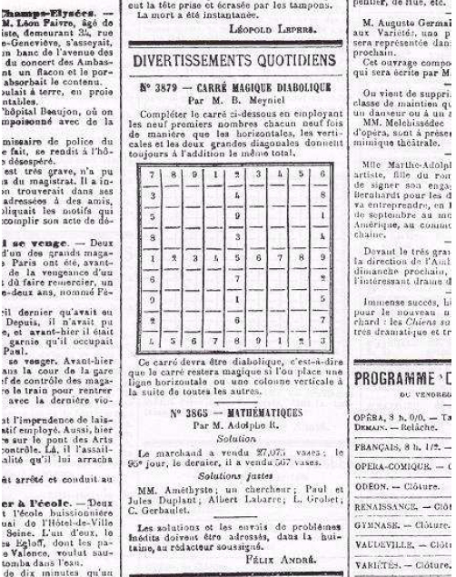
数独真正在全世界流行起来，应该归功于高乐德（Wayne Gould）。
- 台湾于2005年5月由《中国时报》首度引进, 且每日连载, 亦造成很大的回响。台湾数独发展协会（Taiwan Sudoku Association，简称TSA）亦为世界解谜联盟会员。
- 香港则是由AM730于2005年7月30日创刊时引入数独。
- 中国大陆是在2007年2月28日正式引入数独。北京晚报智力休闲数独俱乐部（数独联盟前身）在新闻大厦举行加入世界谜题联合会的颁证仪式，成为世界谜题联合会的39个成员之一。
- 2010年代，随着电脑和智能手机的兴起，数独在个人电脑，网站和手机上也很受欢迎。
扫看技巧
1. 单向扫看法
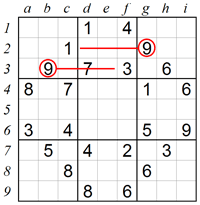 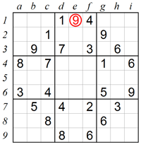2. 双向扫看法
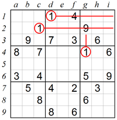 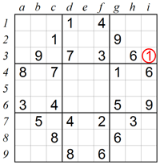3. 寻找候选法
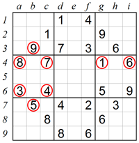 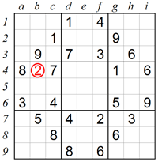4. 数字排除法
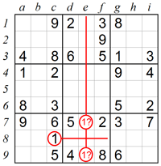
5. 寻找空缺法
 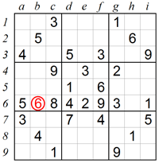
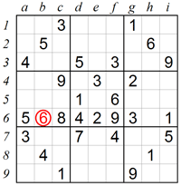
分析技巧
1. 排除法之宫内显性数对
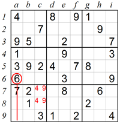 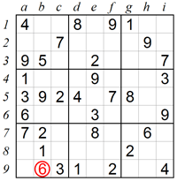2. 排除法之行列间显性数对
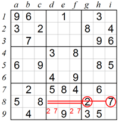 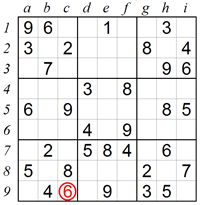3. 排除法之行列间隐性数对
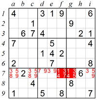 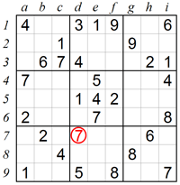4. 排除法之X翼
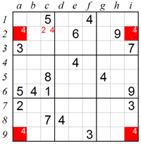 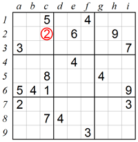数独种类
Classic 数独


Mini 数独
每个谜题都由一个在不同位置给与提示数字的4x4或6x6网格组成。
Mega 数独
每个谜题都由一个在不同位置给与提示数字的12x12或16x16的网格组成。
Irregular 数独
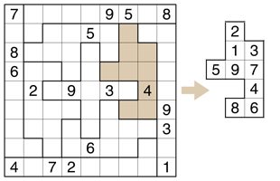Diagonal 数独
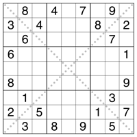 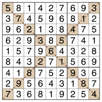Multi 数独
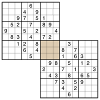Sum 数独
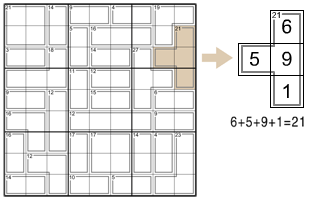OddEven 数独
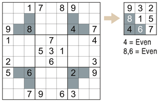Chain 数独
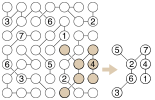数独衍生
数和、数回、数壹、数墙、...